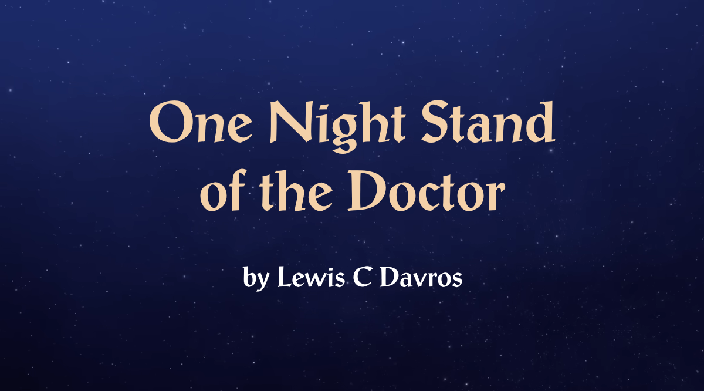

in: Episodes, Regeneration Stories
One Night Stand of the Doctor

| Doctor | The Standalone Doctor |
| Featuring | The Master, The New Doctor |
| Writer | Lewis C Davros |
| Airdate | 1 November 2020 |
| Previous | ― |
| Next | Employee of the Month |
"Behold, the Games Console of Rassilon!"
― The Master
One Night Stand of the Doctor is the first and only episode of the One Night Stand Doctor's series.
Story
The Standalone Doctor is an incarnation of the Doctor who will only live through one night due to the curse the Slumberman placed on him.
Wanting to live his life to the fullest, he decides to fax his old enemy, the Master. The two Time Lords mutually agree to put aside their usual differences for one night of passion, playing Mario Kart Wii.
Six games into their tournament, the Master is winning. However, as the night draws to an end, the Doctor begins to regenerate. He attempts to hold it off for one more race, but the force of regeneration is too strong for him to stop it. The magnitude of the blast rips through the room and obliterates the Master's Xbox console. Realising the damage, the new Doctor runs into his TARDIS and escapes as the Master wakes up and vows revenge on him.
Cast
Notes
| The Master | Original • |